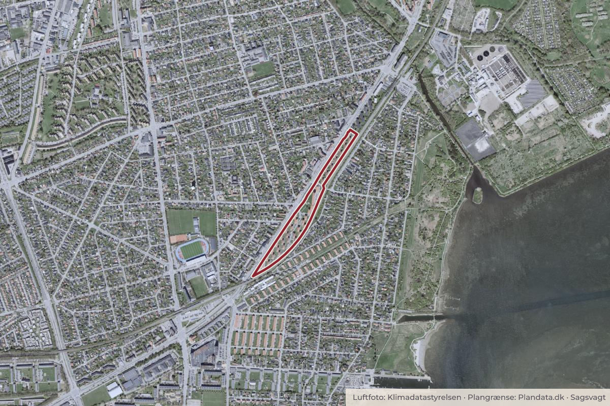

Besluttet 27. oktober, Kommunalbestyrelsen, Hvidovre
Endelig vedtagelse af Lokalplan 344 for Beringparken
Direktøren indstiller til By- og Planudvalget at anbefale over for Kommunalbestyrelsen 1. at godkende, at Lokalplan 344 for Beringparken vedtages endeligt med følgende ændringer: a. at der i afsnittet om trafikstøj i lokalplanens redegørelse på side 15 indsættes et kort, der viser støjudbredelsen fra jernbanen.
Trafik og cyklerByggeri og lokalplaner

Kort: © OpenStreetMap-bidragydere. Plangrænse: Plandata.dk, Hvidovre Kommune.

Kort fortalt
- Forslaget
- Godkende, at Lokalplan 344 for Beringparken vedtages endeligt med følgende
- Hvem
- Kommunalbestyrelsen, Hvidovre Kommune
- Hvornår
- Tirsdag 27. oktober 2026
- Status
- Besluttet. Ad 1. Kommunalbestyrelsen godkendte, at Lokalplan 344 for Beringparken vedtages endeligt med følgende ændringer: a. at der i afsnittet om trafikstøj i lokalplanens redegørelse på side 15 indsættes et kort, der viser støjudbredelsen fra jernbanen.
Læs hele sagen Kommunens egen tekst
Indstilling
Direktøren indstiller til By- og Planudvalget at anbefale over for Kommunalbestyrelsen
1. at godkende, at Lokalplan 344 for Beringparken vedtages endeligt med følgende
ændringer:
a. at der i afsnittet om trafikstøj i lokalplanens redegørelse på side 15
indsættes et kort, der viser støjudbredelsen fra jernbanen.
Behandling i By- og Planudvalget 5. oktober 2026
Ad 1.a. Anbefales godkendt.
Sagsfremstilling
Dette dagsordenspunkt er udarbejdet af Center for Plan og Miljø.
Forslag til Lokalplan 344 for Beringparken har været fremlagt i offentlig høring, og kan nu
vedtages endeligt (vedlagt som bilag ”Forslag til Lokalplan 344 for Beringparken”).
Lokalplanens indhold
Formålet med lokalplanen er først og fremmest at sikre bebyggelsens bevaringsværdier og
særlige karakteristiske træk i balance med muligheden for at modernisere boligerne.
Lokalplanen vil desuden give mulighed for opsætning af altaner på udvalgte facader, og i den
sammenhæng sikre, at altanerne udformes med respekt for bebyggelsens bevaringsværdier.
Endelig er det et formål med lokalplanen at sikre, at der i forbindelse med nye bygge- og
anlægsprojekter etableres afværgeforanstaltninger for at imødekomme udfordringer med
oversvømmelse af regnvand.
Modtagne høringssvar
I løbet af høringsperioden er der kommet 14 høringssvar, der er samlet i ét dokument, hvor de
kan læses i deres helhed (vedlagt som bilag ”Samlede høringssvar til forslag til Lokalplan 344
for Beringparken).
Hovedparten af høringssvarene vedrører lokalplanens mulighed for etablering af altaner.
Størstedelen af høringssvarene er positive over for muligheden for altaner, enkelte høringssvar
udtrykker modstand mod altanerne, og nogle kommer med ønsker til reguleringen af altanerne.
Et enkelt høringssvar omhandler parkeringsforhold uden for området, mens ét høringssvar
påpeger en opmærksomhed omkring bebyggelsens nærhed til jernbanen.
Behandling af høringssvar
Høringssvarene er blevet behandlet i en hvidbog (vedlagt som bilag ”Hvidbog over høringssvar
til forslag til Lokalplan 344 for Beringparken”).
Hvidbogen er opdelt i tre temaer, hvor høringssvarene er samlet under relevante emner. For
hvert tema gives et kort resume af de indkomne bemærkninger efterfulgt af administrationens
kommentarer og eventuelle anbefalinger til ændringer af lokalplanen.
Administrationen anbefaler ikke ændringer på baggrund af de modtagne høringssvar. På
baggrund af drøftelser under høringen anbefales dog en mindre tilføjelse om kortlægning af
jernbanestøj til lokalplanens redegørelse.
Anbefalede ændringer
Administrationen anbefaler, at der indsættes et kort som viser udbredelsen af jernbanestøj i
området. Baggrunden for anbefalingen er, at der har været nogle drøftelser om overholdelse af
Miljøstyrelsens støjgrænser i relation til muligheden for at opsætte altaner.
Lokalplanen fastsætter, at der ikke må indrettes udendørs opholdsarealer (herunder altaner) på
arealer med støjniveauer over 58 dB fra vejtrafik og 64 dB fra jernbanetrafik. Det eksisterende
støjkort i lokalplanen viser, at størstedelen af de vestvendte facader i Beringparken er påvirket
af vejstøj over grænseværdien, og derfor kan der ikke opføres altaner på disse facader.
Administrationen har også undersøgt støjpåvirkningen fra jernbanen. Her kan det konstateres,
at støjen ikke hindrer etablering af altaner på de øst- og sydvendte facader, hvor lokalplanen
tillader opsætning af altaner. Da lokalplanen ikke indeholder et kort, der viser udbredelsen af
jernbanestøj i området, anbefales det, at et sådant kort indarbejdes i redegørelsen.
Politiske beslutninger og aftaler
By- og Planudvalget besluttede den 7. juni 2022, punkt 8, at igangsætte arbejdet med
Lokalplan 344 for Beringparken.
Kommunalbestyrelsen godkendte den 28. april 2026, punkt 10, at sende forslag til Lokalplan
344 for Beringparken i offentlig høring i mindst fire uger.
Økonomiske konsekvenser
Der er ingen økonomiske konsekvenser for Hvidovre Kommune.
Retsgrundlag
Lokalplaner udarbejdes efter planlovens §§ 13-16, jævnfør lovbekendtgørelse nr. 572 af 29.
maj 2024. Offentliggørelse og vedtagelse af planer sker efter samme lovs §§ 24-27.
En lokalplan skal tilvejebringes, før der gennemføres større udstykninger eller større byggeeller anlægsarbejder, herunder nedrivninger af bebyggelse, og i øvrigt når det er nødvendigt for
at sikre kommuneplanens virkeliggørelse, jævnfør planlovens § 13, stk. 2.
Høring
Forslag til Lokalplan 344 har været fremlagt i offentlig høring i perioden fra den 6. maj 2026 til
den 15. juni 2026. I løbet af høringsperioden er der kommet 14 høringssvar.
Den 4. juni 2026 blev der afholdt et borgermøde om lokalplansforslagets indhold.
Klima-, miljø- og bæredygtighedsmæssige konsekvenser
Der er ikke umiddelbart klima-, miljø- eller bæredygtighedsmæssige konsekvenser i denne sag.
Beslutning
Ad 1. Kommunalbestyrelsen godkendte, at Lokalplan 344 for Beringparken vedtages
endeligt med følgende ændringer:
a. at der i afsnittet om trafikstøj i lokalplanens redegørelse på side 15 indsættes et kort,
der viser støjudbredelsen fra jernbanen.
Kilde: Hvidovre Kommune, Kommunalbestyrelsen, referat fra mødet tirsdag 27. oktober 2026, punkt 4. Læs den originale sag hos kommunen.